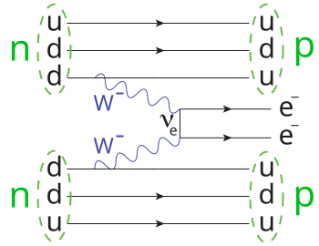
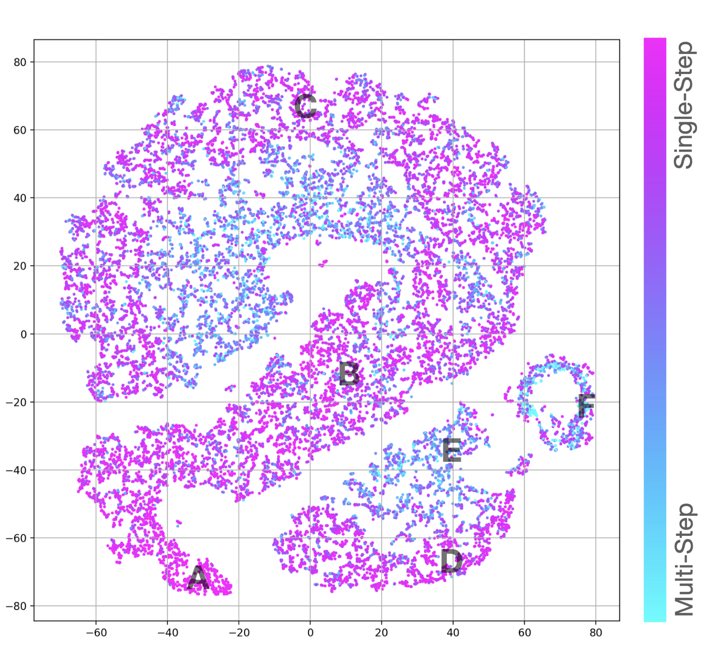
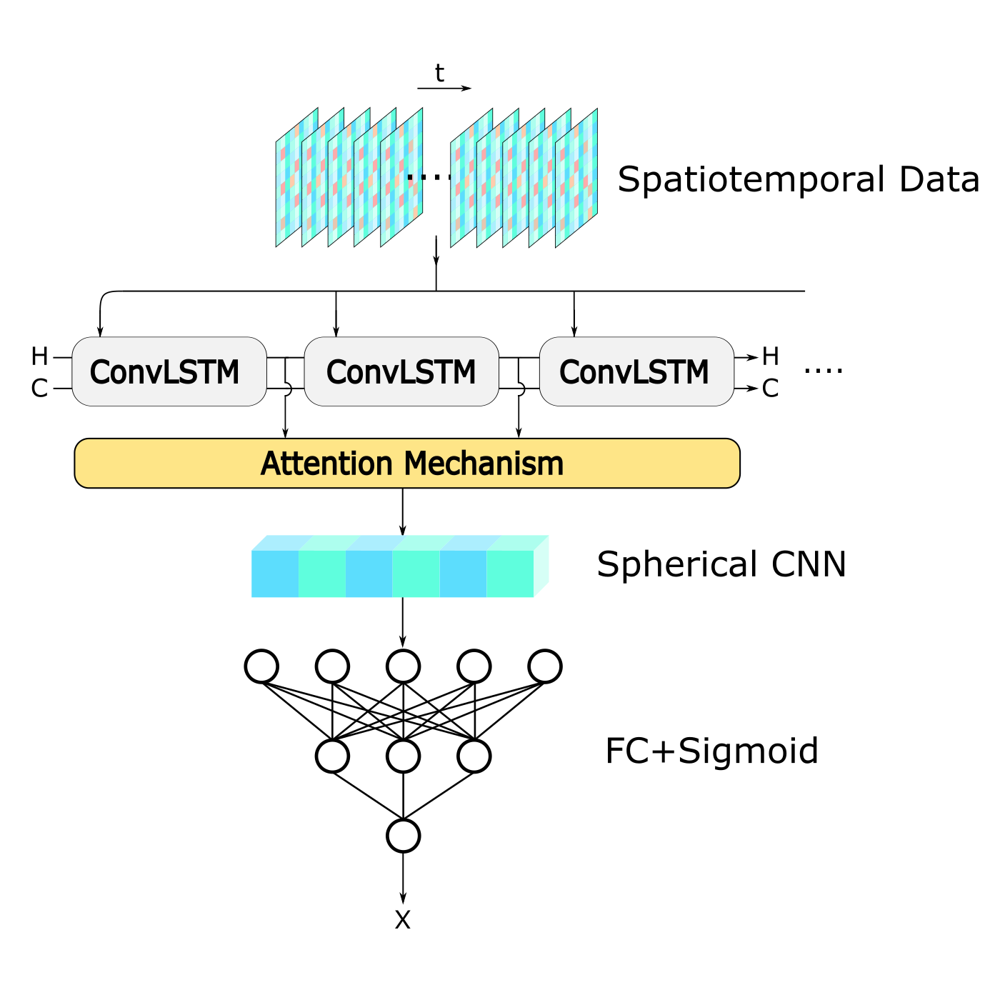
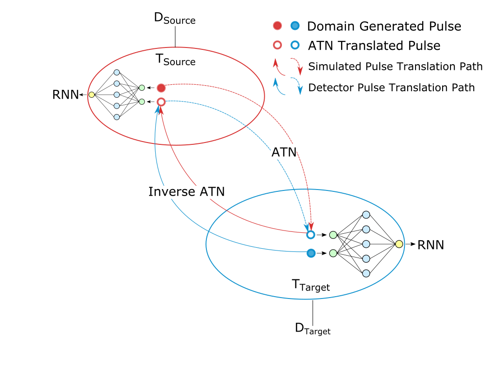

Aobo Li
- Katharina Kilgus (U. Tuebingen, GeM group) will start summer summer research projects at UNC, under the joint mentor of Aobo Li and Julieta Gruszko. This trip is funded by German Reinhardt Frank-Stifung Foundation.
- Aobo Li was invited to give physics division seminar at Argonne National Laboratory!
- Aobo Li was invited to give panel talk in Carolina Data Science Now! Link
- Henry Nachman (UNC, GeM group) graduated from UNC Chapel Hill with highest honor, congratulations Henry!
- Bounds from KamLAND-Zen on neutrinoless double-beta decay begin to probe the heart of neutrino mass inverted hierarchy parameter space! Link Feature Article in Physics
- KamNet has helped KamLAND-Zen reach the world's most sensitive search for 0𝑣ββ! Link
Research
Click here for selected publications
Nature

Neutrinoless Double-Beta Decay (NLDBD)
An extremely rare decay of neutrinos that shed light on the nature of neutrinos and the violation of lepton number conservation.

Weakly Interacting Massive Particle (WIMP)
A hypothetical particle that is postulated to be a potential candidate for dark matter due to its feeble interactions with ordinary matter and substantial mass
Encoder


Decoder

Self-Supervised Learning (SSL)
By training on large, unlabelled datasets, SSL models acquire a task-agnostic representation of detector data. Key for unlocking the "ChatGPT" of particle physics experiments.

Fast ML on FPGA
Design and deploy cutting-edge machine learning models onto the next-generation data acquisition board, aiming at empower KamLAND-Zen with in-situ position reconstruction capabilities and real-time detector control functionality.
GeM Group
The Germanium Machine Learning (GeM) Group within the LEGEND collaboration, leverages efficient and interpretable AI to aid all aspects of LEGEND analysis while educating domestic and international collaborators to gain AI experiences.

KamNet
Harness breakthroughs in geometric deep learning and spatiotemporal data analysis to maximally extract information from KamLAND-Zen data.

Transfer Learning
Leveraging transfer learning algorithms, we can "translated" simulated Germanium detector pulses to a state indistinguishable from realistic detector pulse.
Physics